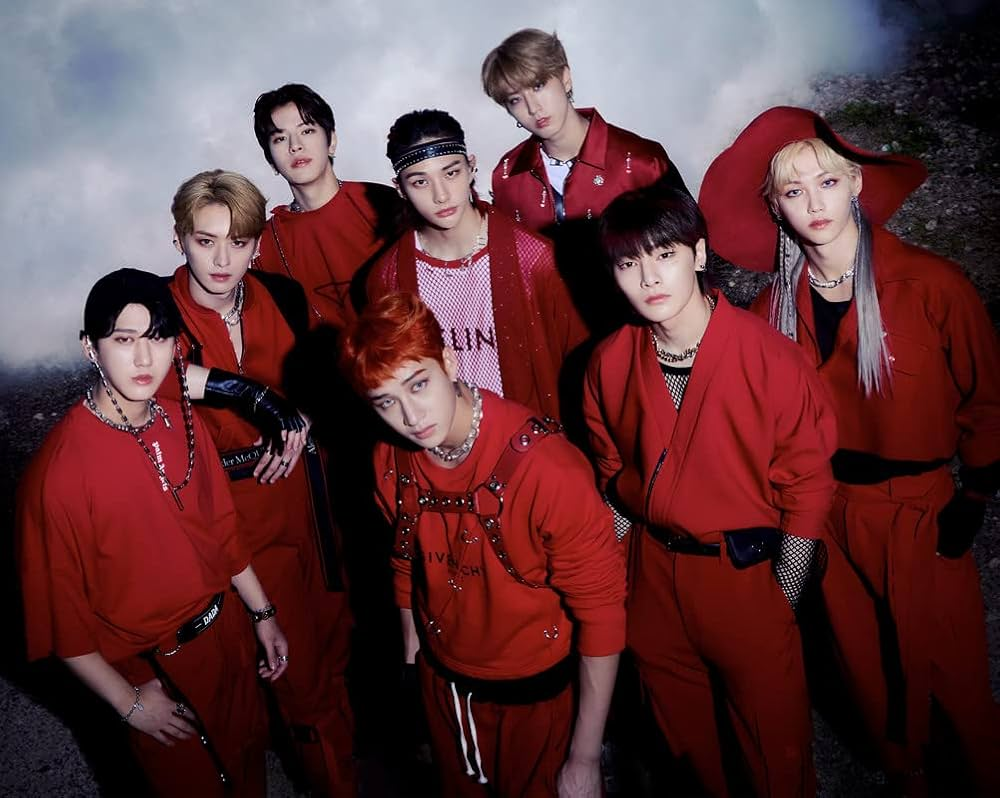
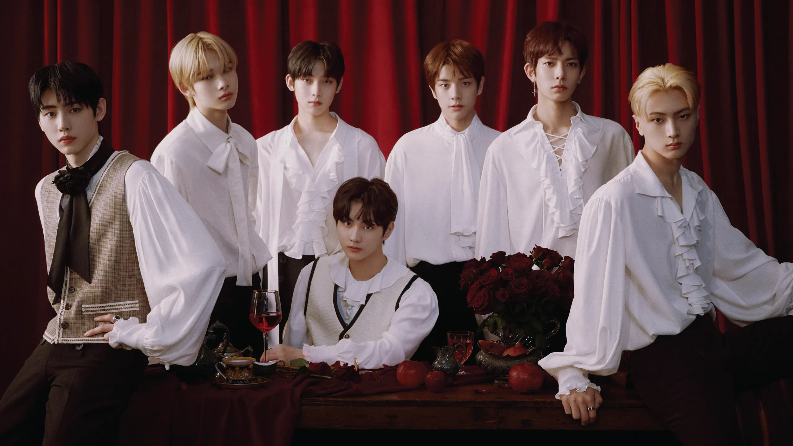
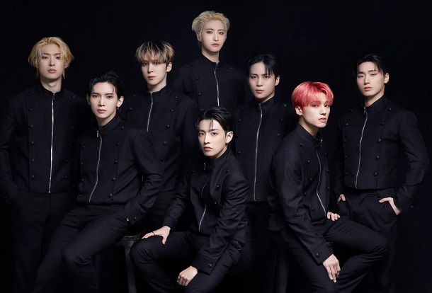
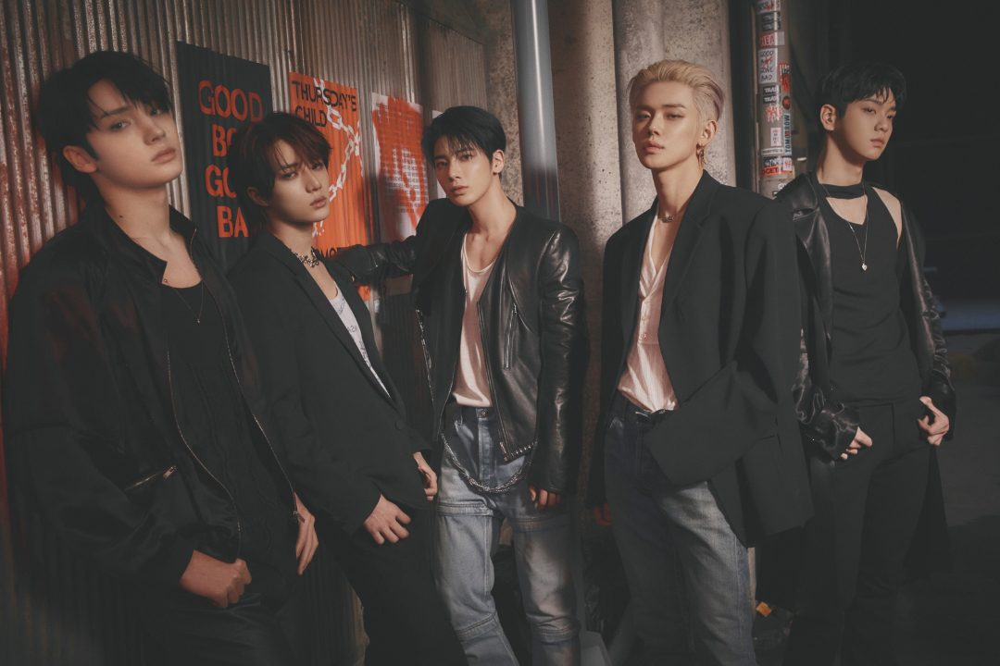

Welcome to your trusted source of news. Here are some Kpop band Groups to Present to you.First of all what are Kpop Group as you are wondering. Kpop first of all are
the songs that are from South Korea!. So saying the Kpop Band Groups are girl or boy groups that sing those songs.
The band must have more than one or two people.
So we are going look through them to know some of them as they are so many.
Welcome In The World of KPOP:
March 8, 2025
This is Stray Kids!!(Boy Group)

Stray Kids is a South Korean boy group formed by JYP Entertainment in 2017, consisting
of eight members: Bang Chan (leader), Lee Know, Changbin, Hyunjin, Han, Felix, Seungmin, and I.N.
They debuted on March 25, 2018, with the EP I Am NOT and are recognized for their energetic performances and self-produced
music that often explores themes of identity and youth. Notable songs include "God's Menu," "Back Door," "Thunderous," and "MANIAC."
Their official fanbase is called Stay, symbolizing the bond between the group and their fans.
Stray Kids is known for their innovative sound and choreography, often incorporating elements of hip-hop, rock, and EDM into their music, making them stand out in the K-pop industry.
This is Enhypen!!(Boy Group)

ENHYPEN is a South Korean boy group formed through the reality survival show "I-LAND" in 2020. Managed under BELIFT LAB, a joint venture between HYBE and CJ ENM, the group quickly rose to international fame. The seven members—Heeseung, Jay, Jake, Sunghoon, Sunoo, Jungwon (leader), and Ni-ki—are known for their strong storytelling, blending vampire, fantasy, and coming-of-age themes in their music.
They made their official debut on November 30, 2020, with the mini-album "BORDER: DAY ONE", featuring the hit song "Given-Taken." Since then, they have gained global recognition with tracks like "Drunk-Dazed," "FEVER," and "Bite Me." Their performances are praised for their sharp choreography, cinematic music videos, and strong vocals.
ENHYPEN's official fanbase is called ENGENE, symbolizing the connection between the group and their fans, as they "run together" on their journey to success.
This is Ateez!!(Boy Group)

ATEEZ is a South Korean boy group formed by KQ Entertainment in 2018, consisting of eight members: Hongjoong (leader),
Seonghwa, Yunho, Yeosang, San, Mingi, Wooyoung, and Jongho.
They debuted on October 24, 2018, with the EP Treasure and are celebrated for their powerful performances
and self-produced music that often explores themes of identity and youth. Notable songs include "God's Menu," "Back Door," "Thunderous," and "MANIAC."
Their official fanbase is called ATINY, symbolizing that ATINYs are the destiny of ATEEZ.
ATEEZ is known for their unique concept of "treasure hunting," where each album and song tells a cohesive story related to adventure and exploration.
This is Twomorrow X Together (TXT)!!(Boy Group)

TXT, short for Tomorrow X Together, is a South Korean boy group under HYBE (formerly BigHit Entertainment). They debuted on March 4, 2019, with the EP "The Dream Chapter: STAR," which included their hit song "CROWN." The group consists of Soobin (leader), Yeonjun, Beomgyu, Taehyun, and Huening Kai.
Known for their versatile music and captivating storytelling, TXT often explores themes of youth, self-discovery, and emotional struggles. They have evolved musically, blending pop, rock, and experimental sounds in songs like "Blue Hour," "0X1=LOVESONG (I Know I Love You)," and "Sugar Rush Ride."
Their official fanbase, MOA (Moments of Alwaysness), represents the unbreakable bond between the members and their fans. TXT continues to be a global trendsetter in K-pop, redefining what it means to be a 4th-generation powerhouse.